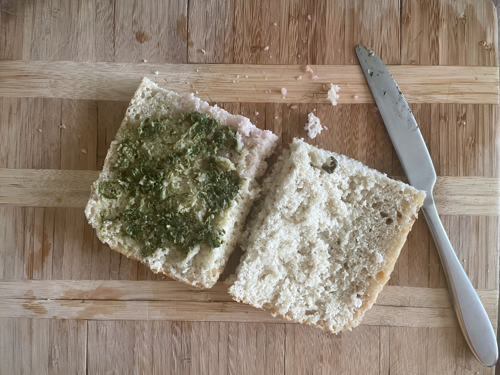

If you have flat bread and not foccacia, toast on a skillet with oil till golden brown, then grate garlic into the brown side of the bread.
Flip bread lighter side facing up, and apply pesto to the top half.
Slice tomatoes diagonally and then cut into half circles, then salt.
Cut some lettuce and add it on top of the tomatoes.
Place pickled onions on top of the lettuce
Grate cheese of choice on top of the onions.
Place the top half on top of the sandwhich and wrap in parchment paper till it covers the whole sandwhich, cut in half and enjoy.